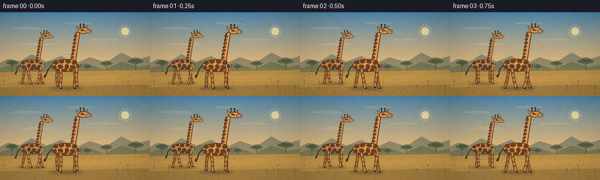
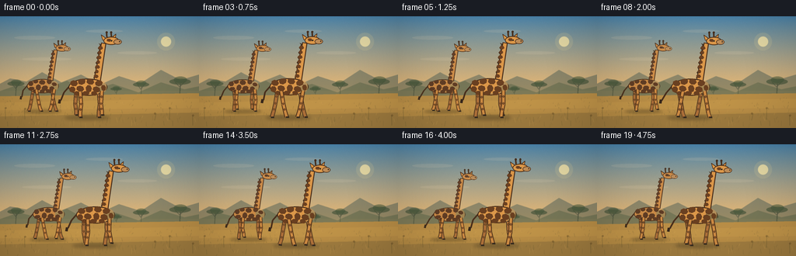

CODING AGENTS AS PIXEL WORLD MODELS
traex/GPT-5.6-Sol · instance_preservation_0011
点击播放 · 原生 RGB 像素
逐轮保存的候选
回放视频、检查图与代码变化。
每份候选均可单独播放。实际图片检查记录在下方工具轨迹中。
候选 01播放与检查图
点击播放 · 原生 RGB 像素


展开代码变化
--- 上一保存版本
+++ 本次保存版本
@@ -0,0 +1,229 @@
+from pathlib import Path
+import json, math
+import numpy as np
+from PIL import Image, ImageDraw, ImageFilter
+import artifact_io
+
+ROOT = Path(__file__).resolve().parent
+SPEC = json.loads((ROOT / 'task_spec.json').read_text())
+W, H, N, FPS = SPEC['width'], SPEC['height'], SPEC['frames'], SPEC['fps']
+SS = 4
+SW, SH = W * SS, H * SS
+rng = np.random.default_rng(1217)
+
+
+def sc(v): return int(round(v * SS))
+def pts(seq): return [(sc(x), sc(y)) for x, y in seq]
+def ell(draw, box, fill, outline=None, width=1):
+ draw.ellipse(tuple(sc(v) for v in box), fill=fill, outline=outline, width=sc(width) if outline else 1)
+def line(draw, xy, fill, width, joint='curve'):
+ draw.line(pts(xy), fill=fill, width=sc(width), joint=joint)
+def poly(draw, xy, fill, outline=None, width=1):
+ draw.polygon(pts(xy), fill=fill)
+ if outline:
+ draw.line(pts(list(xy)+[xy[0]]), fill=outline, width=sc(width), joint='curve')
+
+# Fixed, painterly background at supersampled resolution.
+def make_background():
+ y = np.arange(SH)[:, None]
+ top = np.array([72, 130, 170], dtype=float)
+ horizon = np.array([245, 188, 111], dtype=float)
+ t = np.clip(y / sc(105), 0, 1) ** 0.85
+ rgb = top[None, None, :] * (1-t[:, :, None]) + horizon[None, None, :] * t[:, :, None]
+ rgb = np.repeat(rgb, SW, axis=1)
+ # Fine fixed film/paper grain.
+ noise = rng.normal(0, 1.6, (SH, SW, 1))
+ rgb = np.clip(rgb + noise, 0, 255).astype(np.uint8)
+ im = Image.fromarray(rgb, 'RGB')
+ d = ImageDraw.Draw(im, 'RGBA')
+ # Sun and haze.
+ ell(d, (202, 21, 225, 44), (255, 224, 145, 34))
+ ell(d, (207, 26, 220, 39), (255, 235, 169, 180))
+ # Thin, warm high clouds.
+ for box in [(18,25,71,30),(110,17,158,21),(151,45,202,49),(28,53,92,57)]:
+ ell(d, box, (255, 226, 186, 28))
+ # Distant layered escarpments.
+ poly(d, [(-8,91),(13,80),(34,84),(54,72),(79,85),(104,75),(129,88),(153,77),(181,86),(207,69),(232,82),(266,72),(266,109),(-8,109)], (94,105,91,150))
+ poly(d, [(-8,99),(24,88),(53,95),(86,83),(111,97),(145,87),(178,98),(207,85),(237,94),(266,88),(266,113),(-8,113)], (108,112,82,195))
+ # Distant acacias: slim trunks and flat canopies.
+ for x0, yy, sz in [(20,89,0.75),(181,90,0.72),(231,87,0.95),(149,95,0.5)]:
+ line(d, [(x0, yy+15),(x0+1, yy)], (62,71,54,160), 1.2*sz)
+ line(d, [(x0,yy+4),(x0-6*sz,yy-2)], (62,71,54,135), .65)
+ line(d, [(x0+1,yy+3),(x0+7*sz,yy-3)], (62,71,54,135), .65)
+ ell(d, (x0-14*sz, yy-7*sz, x0+15*sz, yy+1*sz), (68,82,56,170))
+ ell(d, (x0-8*sz, yy-10*sz, x0+10*sz, yy-1*sz), (70,87,58,150))
+ # Golden ground.
+ poly(d, [(-2,103),(257,99),(257,145),(-2,145)], (181,139,68,255))
+ # Horizontal field bands.
+ poly(d, [(-2,111),(257,106),(257,118),(-2,121)], (202,155,75,95))
+ poly(d, [(-2,129),(257,124),(257,145),(-2,145)], (129,104,56,115))
+ # Grass strokes, deterministic.
+ for i in range(250):
+ x0 = rng.uniform(0,W); yy = rng.uniform(105,144)
+ h = rng.uniform(1.2, 5.5) * (0.45 + (yy-104)/40)
+ lean = rng.uniform(-1.8,1.8)
+ col = (91,83,45,int(rng.uniform(40,115))) if i%3 else (225,178,88,int(rng.uniform(35,90)))
+ line(d, [(x0,yy),(x0+lean,yy-h)], col, rng.uniform(.25,.55))
+ # Small foreground seed heads.
+ for x0 in [7,32,199,218,248]:
+ yy=rng.uniform(130,144); h=rng.uniform(8,16)
+ line(d, [(x0,yy),(x0+rng.uniform(-2,2),yy-h)], (77,69,38,125), .6)
+ ell(d,(x0-1.1,yy-h-1.2,x0+1.4,yy-h+1.2),(99,75,35,120))
+ return im.filter(ImageFilter.GaussianBlur(sc(.18)))
+
+BG = make_background()
+
+# Individual fixed spot layouts: body coordinates relative to body center.
+BODY_SPOTS = {
+ 0: [(-18,-5,5,4,0.1),(-8,-7,5,4,-.3),(3,-7,5,4,.2),(14,-5,5,4,-.2),
+ (-20,3,4,4,-.2),(-10,2,5,4,.2),(1,2,4,5,-.1),(11,3,5,4,.3),(20,1,3,4,-.2),
+ (-14,8,4,3,.1),(-3,8,5,3,-.15),(8,8,4,3,.2)],
+ 1: [(-19,-4,4,4,.2),(-11,-7,4,3,-.2),(-1,-6,5,4,.1),(10,-7,4,4,-.1),(18,-3,4,3,.3),
+ (-18,4,5,3,-.2),(-7,2,4,5,.15),(3,3,5,4,-.3),(14,4,4,4,.1),
+ (-12,8,4,3,.2),(-1,8,4,3,-.1),(9,8,5,3,.25)]
+}
+
+def oval_poly(cx, cy, rx, ry, rot=0, n=8):
+ co, si = math.cos(rot), math.sin(rot)
+ out=[]
+ for k in range(n):
+ a=2*math.pi*k/n
+ x,y=rx*math.cos(a),ry*math.sin(a)
+ out.append((cx+x*co-y*si, cy+x*si+y*co))
+ return out
+
+def draw_leg(d, hip, phase, scale, base, far=False):
+ hx, hy = hip
+ # Hoof traces a smooth walking loop; stance and swing remain grounded/readable.
+ swing = 7.2 * scale * math.sin(phase)
+ lift = 3.0 * scale * max(0.0, -math.cos(phase))
+ foot=(hx+swing, base-lift)
+ knee=(hx+swing*.28 + 1.5*scale*math.sin(phase+1.0), hy+(base-hy)*.50)
+ ankle=(hx+swing*.73, hy+(base-hy)*.82-lift*.45)
+ edge=(77,48,25,255) if not far else (72,48,29,225)
+ hide=(203,137,66,255) if not far else (172,111,57,255)
+ line(d,[hip,knee,ankle,foot],edge,5.3*scale)
+ line(d,[hip,knee,ankle,foot],hide,3.35*scale)
+ # Knee joint and dark hoof.
+ ell(d,(knee[0]-1.8*scale,knee[1]-1.6*scale,knee[0]+1.8*scale,knee[1]+1.6*scale),hide)
+ line(d,[(foot[0]-1.0*scale,foot[1]),(foot[0]+3.0*scale,foot[1]+.3*scale)],(54,43,31,255),2.2*scale)
+ # Leg markings, which move with the articulated limb.
+ for q in (.22,.48,.70):
+ ax=hx+(knee[0]-hx)*min(q/.5,1) if q<=.5 else knee[0]+(ankle[0]-knee[0])*((q-.5)/.32)
+ ay=hy+(base-hy)*q-lift*max(0,(q-.5))
+ ell(d,(ax-1.45*scale,ay-1.55*scale,ax+1.45*scale,ay+1.55*scale),(111,67,35,210))
+
+def draw_giraffe(scene, x, ground, scale, phase, ident, opacity=255):
+ # Separate transparent layer retains crisp silhouettes and correct overlaps.
+ lay=Image.new('RGBA',(SW,SH),(0,0,0,0)); d=ImageDraw.Draw(lay,'RGBA')
+ bob=.55*scale*math.sin(phase*2+.4)
+ body_y=ground-39*scale+bob
+ base=ground
+ outline=(73,47,28,opacity)
+ tan=(219,151,73,opacity) if ident==0 else (205,137,67,opacity)
+ tan_hi=(239,178,93,opacity)
+ spot=(105,62,31,int(opacity*.98)) if ident==0 else (91,53,30,int(opacity*.98))
+ far_tan=(180,116,59,opacity)
+ # Ground shadow, softly blurred later with scene composition.
+ sh=Image.new('RGBA',(SW,SH),(0,0,0,0)); sd=ImageDraw.Draw(sh,'RGBA')
+ ell(sd,(x-30*scale,ground-2.1*scale,x+28*scale,ground+3.3*scale),(54,46,27,85))
+ sh=sh.filter(ImageFilter.GaussianBlur(sc(2.0*scale)))
+ scene.alpha_composite(sh)
+ # Gait: far-side limbs first, diagonal walk sequence.
+ hips=[(x-15*scale,body_y+5*scale),(x+14*scale,body_y+5*scale)]
+ draw_leg(d,hips[0],phase+math.pi,scale,base,True)
+ draw_leg(d,hips[1],phase,scale,base,True)
+ # Tail with a gentle counter-swing.
+ tail_root=(x-24*scale,body_y-1*scale)
+ tail_tip=(x-35*scale+2*scale*math.sin(phase),body_y+17*scale)
+ line(d,[tail_root,(x-31*scale,body_y+7*scale),tail_tip],outline,2.1*scale)
+ line(d,[(tail_tip[0]-1*scale,tail_tip[1]-1*scale),(tail_tip[0]-2*scale,tail_tip[1]+4*scale)],(55,39,27,opacity),3.2*scale)
+ # Neck, gently leaning forward. Tapered silhouette is crucial for species recognition.
+ nx=x+16*scale; topy=body_y-58*scale
+ neck=[(x+7*scale,body_y-6*scale),(x+16*scale,body_y-8*scale),
+ (nx+7*scale,topy+2*scale),(nx+1.5*scale,topy+1*scale)]
+ poly(d,neck,tan,outline,1.2*scale)
+ # Neck mane on rear edge.
+ mane=[]
+ for k in range(8):
+ yy=body_y-10*scale-k*6.3*scale
+ xx=x+9.0*scale+k*.95*scale
+ mane.extend([(xx,yy),(xx-2.0*scale,yy-2.4*scale)])
+ mane += [(nx+1.5*scale,topy+3*scale),(x+7*scale,body_y-7*scale)]
+ poly(d,mane,(69,48,31,opacity))
+ # Body silhouette.
+ ell(d,(x-25*scale,body_y-11*scale,x+25*scale,body_y+11*scale),tan,outline,1.25*scale)
+ # Belly highlight and shoulder definition.
+ line(d,[(x-15*scale,body_y+8*scale),(x+13*scale,body_y+9*scale)],(239,174,91,90),1.0*scale)
+ ell(d,(x+10*scale,body_y-8*scale,x+24*scale,body_y+8*scale),(224,154,75,105))
+ # Body spot mosaic, fixed per individual.
+ for cx,cy,rx,ry,rot in BODY_SPOTS[ident]:
+ poly(d,oval_poly(x+cx*scale,body_y+cy*scale,rx*scale,ry*scale,rot,7),spot)
+ # Neck spots, fixed and alternating.
+ for k in range(7):
+ yy=body_y-(14+k*6.1)*scale
+ xx=x+(10.5+k*.95)*scale
+ rx=(3.1 if k%2==0 else 2.3)*scale
+ poly(d,oval_poly(xx,yy,rx,2.5*scale,(-.25 if k%2 else .2),6),spot)
+ # Near legs over torso.
+ draw_leg(d,(x-10*scale,body_y+6*scale),phase,scale,base,False)
+ draw_leg(d,(x+18*scale,body_y+5*scale),phase+math.pi,scale,base,False)
+ # Head and features.
+ headx=nx+13*scale; heady=topy-1.5*scale + .45*scale*math.sin(phase*2)
+ # Ears behind head.
+ poly(d,[(headx-5*scale,heady-3*scale),(headx-12*scale,heady-8*scale),(headx-10*scale,heady-1*scale)],tan,outline,.8*scale)
+ poly(d,[(headx+1*scale,heady-4*scale),(headx+7*scale,heady-9*scale),(headx+6*scale,heady-2*scale)],tan,outline,.8*scale)
+ # Ossicones.
+ for ox in (-4.5,1.3):
+ line(d,[(headx+ox*scale,heady-5*scale),(headx+(ox-.4)*scale,heady-11*scale)],outline,2.1*scale)
+ ell(d,(headx+(ox-1.7)*scale,heady-12.5*scale,headx+(ox+1.0)*scale,heady-9.8*scale),(69,47,31,opacity))
+ ell(d,(headx-9*scale,heady-5.5*scale,headx+11*scale,heady+5.0*scale),tan,outline,1.0*scale)
+ # Long pale muzzle faces right.
+ ell(d,(headx+4*scale,heady-2.2*scale,headx+14.5*scale,heady+4.5*scale),(189,139,86,opacity),outline,.7*scale)
+ # Brow patch, eye, nostril.
+ poly(d,oval_poly(headx-2*scale,heady-1.0*scale,3.0*scale,2.1*scale,.1,6),spot)
+ ell(d,(headx+.4*scale,heady-1.2*scale,headx+2.2*scale,heady+.6*scale),(25,24,19,opacity))
+ ell(d,(headx+.65*scale,heady-1.0*scale,headx+1.15*scale,heady-.5*scale),(245,225,173,opacity))
+ ell(d,(headx+11.0*scale,heady+.1*scale,headx+12.5*scale,heady+1.5*scale),(58,43,31,opacity))
+ # Tiny chin line.
+ line(d,[(headx+7*scale,heady+4*scale),(headx+12*scale,heady+3.8*scale)],(83,54,35,opacity),.55*scale)
+ scene.alpha_composite(lay)
+ return [(x-10*scale + 7.2*scale*math.sin(phase), ground),
+ (x+18*scale + 7.2*scale*math.sin(phase+math.pi), ground)]
+
+def render_frame(i):
+ t=i/(N-1)
+ im=BG.convert('RGBA')
+ # Atmospheric foreground light veil behind animals.
+ haze=Image.new('RGBA',(SW,SH),(0,0,0,0)); hd=ImageDraw.Draw(haze,'RGBA')
+ hd.rectangle((0,sc(96),SW,sc(123)),fill=(242,190,102,12))
+ im.alpha_composite(haze)
+ # Both animals remain fully in frame; individual 1 is smaller/darker and behind.
+ ph2=2*math.pi*(1.65*t)+1.55
+ x2=55+13*t
+ draw_giraffe(im,x2,122,.82,ph2,1,235)
+ ph1=2*math.pi*(1.65*t)
+ x1=113+17*t
+ feet=draw_giraffe(im,x1,130,1.0,ph1,0,255)
+ # Modest dust motes appear only near moving feet, enhancing contact/motion.
+ dust=Image.new('RGBA',(SW,SH),(0,0,0,0)); dd=ImageDraw.Draw(dust,'RGBA')
+ for j in range(7):
+ q=(j*0.618+i*.21)%1
+ fx=feet[j%2][0]-5*q+2*math.sin(j+i)
+ fy=129-5*q-abs(math.sin(i*.5+j))*1.2
+ r=.45+q*.7
+ ell(dd,(fx-r,fy-r,fx+r,fy+r),(226,184,112,int(48*(1-q))))
+ dust=dust.filter(ImageFilter.GaussianBlur(sc(.55)))
+ im.alpha_composite(dust)
+ # Slight cinematic vignette, fixed in camera space.
+ arr=np.asarray(im.convert('RGB')).astype(np.float32)
+ yy,xx=np.mgrid[0:SH,0:SW]
+ dx=(xx-SW/2)/(SW/2); dy=(yy-SH*.48)/(SH*.72)
+ vig=np.clip(1-.10*np.maximum(0,dx*dx+dy*dy-.25),.87,1.0)
+ arr*=vig[...,None]
+ out=Image.fromarray(np.clip(arr,0,255).astype(np.uint8)).resize((W,H),Image.Resampling.LANCZOS)
+ return np.asarray(out,dtype=np.uint8)
+
+frames=np.stack([render_frame(i) for i in range(N)],axis=0)
+artifact_io.save(frames,ROOT)
+print(f'saved {frames.shape} {frames.dtype}; mean={frames.mean():.2f}')
可观测工具轨迹
实际执行的命令与返回图片。
命令 1exit 0
/bin/bash -lc "cat prompt.txt && printf '\\n--- GENERATION_RULES.md ---\\n' && cat GENERATION_RULES.md"
命令 2exit 0
/bin/bash -lc "cat task_spec.json && printf '\\n--- FILES ---\\n' && find . -maxdepth 2 -type f -printf '%p\\n' | sort"
命令 3exit 0
/bin/bash -lc 'cat artifact_io.py'
命令 4exit 0
/bin/bash -lc "cat > generate.py <<'PY'
from pathlib import Path
import json, math
import numpy as np
from PIL import Image, ImageDraw, ImageFilter
import artifact_io
ROOT = Path(__file__).resolve().parent
SPEC = json.loads((ROOT / 'task_spec.json').read_text())
W, H, N, FPS = SPEC['width'], SPEC['height'], SPEC['frames'], SPEC['fps']
SS = 4
SW, SH = W * SS, H * SS
rng = np.random.default_rng(1217)
def sc(v): return int(round(v * SS))
def pts(seq): return [(sc(x), sc(y)) for x, y in seq]
def ell(draw, box, fill, outline=None, width=1):
draw.ellipse(tuple(sc(v) for v in box), fill=fill, outline=outline, width=sc(width) if outline else 1)
def line(draw, xy, fill, width, joint='curve'):
draw.line(pts(xy), fill=fill, width=sc(width), joint=joint)
def poly(draw, xy, fill, outline=None, width=1):
draw.polygon(pts(xy), fill=fill)
if outline:
draw.line(pts(list(xy)+[xy[0]]), fill=outline, width=sc(width), joint='curve')
# Fixed, painterly background at supersampled resolution.
def make_background():
y = np.arange(SH)[:, None]
top = np.array([72, 130, 170], dtype=float)
horizon = np.array([245, 188, 111], dtype=float)
t = np.clip(y / sc(105), 0, 1) ** 0.85
rgb = top[None, None, :] * (1-t[:, :, None]) + horizon[None, None, :] * t[:, :, None]
rgb = np.repeat(rgb, SW, axis=1)
# Fine fixed film/paper grain.
noise = rng.normal(0, 1.6, (SH, SW, 1))
rgb = np.clip(rgb + noise, 0, 255).astype(np.uint8)
im = Image.fromarray(rgb, 'RGB')
d = ImageDraw.Draw(im, 'RGBA')
# Sun and haze.
ell(d, (202, 21, 225, 44), (255, 224, 145, 34))
ell(d, (207, 26, 220, 39), (255, 235, 169, 180))
# Thin, warm high clouds.
for box in [(18,25,71,30),(110,17,158,21),(151,45,202,49),(28,53,92,57)]:
ell(d, box, (255, 226, 186, 28))
# Distant layered escarpments.
poly(d, [(-8,91),(13,80),(34,84),(54,72),(79,85),(104,75),(129,88),(153,77),(181,86),(207,69),(232,82),(266,72),(266,109),(-8,109)], (94,105,91,150))
poly(d, [(-8,99),(24,88),(53,95),(86,83),(111,97),(145,87),(178,98),(207,85),(237,94),(266,88),(266,113),(-8,113)], (108,112,82,195))
# Distant acacias: slim trunks and flat canopies.
for x0, yy, sz in [(20,89,0.75),(181,90,0.72),(231,87,0.95),(149,95,0.5)]:
line(d, [(x0, yy+15),(x0+1, yy)], (62,71,54,160), 1.2*sz)
line(d, [(x0,yy+4),(x0-6*sz,yy-2)], (62,71,54,135), .65)
line(d, [(x0+1,yy+3),(x0+7*sz,yy-3)], (62,71,54,135), .65)
ell(d, (x0-14*sz, yy-7*sz, x0+15*sz, yy+1*sz), (68,82,56,170))
ell(d, (x0-8*sz, yy-10*sz, x0+10*sz, yy-1*sz), (70,87,58,150))
# Golden ground.
poly(d, [(-2,103),(257,99),(257,145),(-2,145)], (181,139,68,255))
# Horizontal field bands.
poly(d, [(-2,111),(257,106),(257,118),(-2,121)], (202,155,75,95))
poly(d, [(-2,129),(257,124),(257,145),(-2,145)], (129,104,56,115))
# Grass strokes, deterministic.
for i in range(250):
x0 = rng.uniform(0,W); yy = rng.uniform(105,144)
h = rng.uniform(1.2, 5.5) * (0.45 + (yy-104)/40)
lean = rng.uniform(-1.8,1.8)
col = (91,83,45,int(rng.uniform(40,115))) if i%3 else (225,178,88,int(rng.uniform(35,90)))
line(d, [(x0,yy),(x0+lean,yy-h)], col, rng.uniform(.25,.55))
# Small foreground seed heads.
for x0 in [7,32,199,218,248]:
yy=rng.uniform(130,144); h=rng.uniform(8,16)
line(d, [(x0,yy),(x0+rng.uniform(-2,2),yy-h)], (77,69,38,125), .6)
ell(d,(x0-1.1,yy-h-1.2,x0+1.4,yy-h+1.2),(99,75,35,120))
return im.filter(ImageFilter.GaussianBlur(sc(.18)))
BG = make_background()
# Individual fixed spot layouts: body coordinates relative to body center.
BODY_SPOTS = {
0: [(-18,-5,5,4,0.1),(-8,-7,5,4,-.3),(3,-7,5,4,.2),(14,-5,5,4,-.2),
(-20,3,4,4,-.2),(-10,2,5,4,.2),(1,2,4,5,-.1),(11,3,5,4,.3),(20,1,3,4,-.2),
(-14,8,4,3,.1),(-3,8,5,3,-.15),(8,8,4,3,.2)],
1: [(-19,-4,4,4,.2),(-11,-7,4,3,-.2),(-1,-6,5,4,.1),(10,-7,4,4,-.1),(18,-3,4,3,.3),
(-18,4,5,3,-.2),(-7,2,4,5,.15),(3,3,5,4,-.3),(14,4,4,4,.1),
(-12,8,4,3,.2),(-1,8,4,3,-.1),(9,8,5,3,.25)]
}
def oval_poly(cx, cy, rx, ry, rot=0, n=8):
co, si = math.cos(rot), math.sin(rot)
out=[]
for k in range(n):
a=2*math.pi*k/n
x,y=rx*math.cos(a),ry*math.sin(a)
out.append((cx+x*co-y*si, cy+x*si+y*co))
return out
def draw_leg(d, hip, phase, scale, base, far=False):
hx, hy = hip
# Hoof traces a smooth walking loop; stance and swing remain grounded/readable.
swing = 7.2 * scale * math.sin(phase)
lift = 3.0 * scale * max(0.0, -math.cos(phase))
foot=(hx+swing, base-lift)
knee=(hx+swing*.28 + 1.5*scale*math.sin(phase+1.0), hy+(base-hy)*.50)
ankle=(hx+swing*.73, hy+(base-hy)*.82-lift*.45)
edge=(77,48,25,255) if not far else (72,48,29,225)
hide=(203,137,66,255) if not far else (172,111,57,255)
line(d,[hip,knee,ankle,foot],edge,5.3*scale)
line(d,[hip,knee,ankle,foot],hide,3.35*scale)
# Knee joint and dark hoof.
ell(d,(knee[0]-1.8*scale,knee[1]-1.6*scale,knee[0]+1.8*scale,knee[1]+1.6*scale),hide)
line(d,[(foot[0]-1.0*scale,foot[1]),(foot[0]+3.0*scale,foot[1]+.3*scale)],(54,43,31,255),2.2*scale)
# Leg markings, which move with the articulated limb.
for q in (.22,.48,.70):
ax=hx+(knee[0]-hx)*min(q/.5,1) if q<=.5 else knee[0]+(ankle[0]-knee[0])*((q-.5)/.32)
ay=hy+(base-hy)*q-lift*max(0,(q-.5))
ell(d,(ax-1.45*scale,ay-1.55*scale,ax+1.45*scale,ay+1.55*scale),(111,67,35,210))
def draw_giraffe(scene, x, ground, scale, phase, ident, opacity=255):
# Separate transparent layer retains crisp silhouettes and correct overlaps.
lay=Image.new('RGBA',(SW,SH),(0,0,0,0)); d=ImageDraw.Draw(lay,'RGBA')
bob=.55*scale*math.sin(phase*2+.4)
body_y=ground-39*scale+bob
base=ground
outline=(73,47,28,opacity)
tan=(219,151,73,opacity) if ident==0 else (205,137,67,opacity)
tan_hi=(239,178,93,opacity)
spot=(105,62,31,int(opacity*.98)) if ident==0 else (91,53,30,int(opacity*.98))
far_tan=(180,116,59,opacity)
# Ground shadow, softly blurred later with scene composition.
sh=Image.new('RGBA',(SW,SH),(0,0,0,0)); sd=ImageDraw.Draw(sh,'RGBA')
ell(sd,(x-30*scale,ground-2.1*scale,x+28*scale,ground+3.3*scale),(54,46,27,85))
sh=sh.filter(ImageFilter.GaussianBlur(sc(2.0*scale)))
scene.alpha_composite(sh)
# Gait: far-side limbs first, diagonal walk sequence.
hips=[(x-15*scale,body_y+5*scale),(x+14*scale,body_y+5*scale)]
draw_leg(d,hips[0],phase+math.pi,scale,base,True)
draw_leg(d,hips[1],phase,scale,base,True)
# Tail with a gentle counter-swing.
tail_root=(x-24*scale,body_y-1*scale)
tail_tip=(x-35*scale+2*scale*math.sin(phase),body_y+17*scale)
line(d,[tail_root,(x-31*scale,body_y+7*scale),tail_tip],outline,2.1*scale)
line(d,[(tail_tip[0]-1*scale,tail_tip[1]-1*scale),(tail_tip[0]-2*scale,tail_tip[1]+4*scale)],(55,39,27,opacity),3.2*scale)
# Neck, gently leaning forward. Tapered silhouette is crucial for species recognition.
nx=x+16*scale; topy=body_y-58*scale
neck=[(x+7*scale,body_y-6*scale),(x+16*scale,body_y-8*scale),
(nx+7*scale,topy+2*scale),(nx+1.5*scale,topy+1*scale)]
poly(d,neck,tan,outline,1.2*scale)
# Neck mane on rear edge.
mane=[]
for k in range(8):
yy=body_y-10*scale-k*6.3*scale
xx=x+9.0*scale+k*.95*scale
mane.extend([(xx,yy),(xx-2.0*scale,yy-2.4*scale)])
mane += [(nx+1.5*scale,topy+3*scale),(x+7*scale,body_y-7*scale)]
poly(d,mane,(69,48,31,opacity))
# Body silhouette.
ell(d,(x-25*scale,body_y-11*scale,x+25*scale,body_y+11*scale),tan,outline,1.25*scale)
# Belly highlight and shoulder definition.
line(d,[(x-15*scale,body_y+8*scale),(x+13*scale,body_y+9*scale)],(239,174,91,90),1.0*scale)
ell(d,(x+10*scale,body_y-8*scale,x+24*scale,body_y+8*scale),(224,154,75,105))
# Body spot mosaic, fixed per individual.
for cx,cy,rx,ry,rot in BODY_SPOTS[ident]:
poly(d,oval_poly(x+cx*scale,body_y+cy*scale,rx*scale,ry*scale,rot,7),spot)
# Neck spots, fixed and alternating.
for k in range(7):
yy=body_y-(14+k*6.1)*scale
xx=x+(10.5+k*.95)*scale
rx=(3.1 if k%2==0 else 2.3)*scale
poly(d,oval_poly(xx,yy,rx,2.5*scale,(-.25 if k%2 else .2),6),spot)
# Near legs over torso.
draw_leg(d,(x-10*scale,body_y+6*scale),phase,scale,base,False)
draw_leg(d,(x+18*scale,body_y+5*scale),phase+math.pi,scale,base,False)
# Head and features.
headx=nx+13*scale; heady=topy-1.5*scale + .45*scale*math.sin(phase*2)
# Ears behind head.
poly(d,[(headx-5*scale,heady-3*scale),(headx-12*scale,heady-8*scale),(headx-10*scale,heady-1*scale)],tan,outline,.8*scale)
poly(d,[(headx+1*scale,heady-4*scale),(headx+7*scale,heady-9*scale),(headx+6*scale,heady-2*scale)],tan,outline,.8*scale)
# Ossicones.
for ox in (-4.5,1.3):
line(d,[(headx+ox*scale,heady-5*scale),(headx+(ox-.4)*scale,heady-11*scale)],outline,2.1*scale)
ell(d,(headx+(ox-1.7)*scale,heady-12.5*scale,headx+(ox+1.0)*scale,heady-9.8*scale),(69,47,31,opacity))
ell(d,(headx-9*scale,heady-5.5*scale,headx+11*scale,heady+5.0*scale),tan,outline,1.0*scale)
# Long pale muzzle faces right.
ell(d,(headx+4*scale,heady-2.2*scale,headx+14.5*scale,heady+4.5*scale),(189,139,86,opacity),outline,.7*scale)
# Brow patch, eye, nostril.
poly(d,oval_poly(headx-2*scale,heady-1.0*scale,3.0*scale,2.1*scale,.1,6),spot)
ell(d,(headx+.4*scale,heady-1.2*scale,headx+2.2*scale,heady+.6*scale),(25,24,19,opacity))
ell(d,(headx+.65*scale,heady-1.0*scale,headx+1.15*scale,heady-.5*scale),(245,225,173,opacity))
ell(d,(headx+11.0*scale,heady+.1*scale,headx+12.5*scale,heady+1.5*scale),(58,43,31,opacity))
# Tiny chin line.
line(d,[(headx+7*scale,heady+4*scale),(headx+12*scale,heady+3.8*scale)],(83,54,35,opacity),.55*scale)
scene.alpha_composite(lay)
return [(x-10*scale + 7.2*scale*math.sin(phase), ground),
(x+18*scale + 7.2*scale*math.sin(phase+math.pi), ground)]
def render_frame(i):
t=i/(N-1)
im=BG.convert('RGBA')
# Atmospheric foreground light veil behind animals.
haze=Image.new('RGBA',(SW,SH),(0,0,0,0)); hd=ImageDraw.Draw(haze,'RGBA')
hd.rectangle((0,sc(96),SW,sc(123)),fill=(242,190,102,12))
im.alpha_composite(haze)
# Both animals remain fully in frame; individual 1 is smaller/darker and behind.
ph2=2*math.pi*(1.65*t)+1.55
x2=55+13*t
draw_giraffe(im,x2,122,.82,ph2,1,235)
ph1=2*math.pi*(1.65*t)
x1=113+17*t
feet=draw_giraffe(im,x1,130,1.0,ph1,0,255)
# Modest dust motes appear only near moving feet, enhancing contact/motion.
dust=Image.new('RGBA',(SW,SH),(0,0,0,0)); dd=ImageDraw.Draw(dust,'RGBA')
for j in range(7):
q=(j*0.618+i*.21)%1
fx=feet[j%2][0]-5*q+2*math.sin(j+i)
fy=129-5*q-abs(math.sin(i*.5+j))*1.2
r=.45+q*.7
ell(dd,(fx-r,fy-r,fx+r,fy+r),(226,184,112,int(48*(1-q))))
dust=dust.filter(ImageFilter.GaussianBlur(sc(.55)))
im.alpha_composite(dust)
# Slight cinematic vignette, fixed in camera space.
arr=np.asarray(im.convert('RGB')).astype(np.float32)
yy,xx=np.mgrid[0:SH,0:SW]
dx=(xx-SW/2)/(SW/2); dy=(yy-SH*.48)/(SH*.72)
vig=np.clip(1-.10*np.maximum(0,dx*dx+dy*dy-.25),.87,1.0)
arr*=vig[...,None]
out=Image.fromarray(np.clip(arr,0,255).astype(np.uint8)).resize((W,H),Image.Resampling.LANCZOS)
return np.asarray(out,dtype=np.uint8)
frames=np.stack([render_frame(i) for i in range(N)],axis=0)
artifact_io.save(frames,ROOT)
print(f'saved {frames.shape} {frames.dtype}; mean={frames.mean():.2f}')
PY
python generate.py
ls -lh pixels.npz inspection.png transition_check.png index.html frames/00.png frames/19.png"命令 5exit 0
/bin/bash -lc "python - <<'PY'
from pathlib import Path
import numpy as np
from PIL import Image
fs=sorted(Path('frames').glob('*.png'))
a=np.stack([np.asarray(Image.open(p)) for p in fs])
print('shape/dtype',a.shape,a.dtype)
print('frame MAE sequential', np.abs(a[1:].astype(float)-a[:-1]).mean((1,2,3)).round(3).tolist())
print('unique frames',len({x.tobytes() for x in a}))
print('channels min/max',[(int(a[...,c].min()),int(a[...,c].max())) for c in range(3)])
PY"视觉工具实际返回图片 1

视觉工具实际返回图片 2

保存候选 1 份；完成命令 5 次；可验证图片返回 2 张。原始 API 响应与完整日志保留在本地。